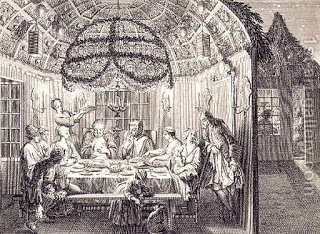

Shabbat 131 - Violating Shabbat to do a mitzvah
We saw earlier that Rabbi Eliezer allows to prepare for a mitzvah on Shabbat, even if one has to do a prohibited work. Actually, Rabbi Eliezer allows this for most other mitzvot, with only two exception: tying a tzitzit on his garment and putting a mezuzah on his door. Why are these the exceptions? - Even though it is true that his garment may need a tzitzit, on Shabbat he may renounce the ownership of his garment or his house altogether, and thus temporarily avoid doing the mitzvah.
However, Rabbi Eliezer allows to go and cut his lulav on Shabbat, and to construct a sukkah on Shabbat, in preparation for the holiday on Sunday - because the lulav must be taken "on that day," and so also the sukkah must entered "on that day." Granted, but why do we need to learn this law twice? The Torah should have taught us one of them, and we would derive the other!? - No, we can't do that. Lulav is special, because it requries three more species of plant to go with it, so we cannot learn the law of the sukkah from it. In turn, sukkah is special in that it is required both by day and by night, and therefore we cannot learn the law of the lulav from sukkah.
Art: Bernard Picart - Jewish Meal During the Feast of the Tabernacles